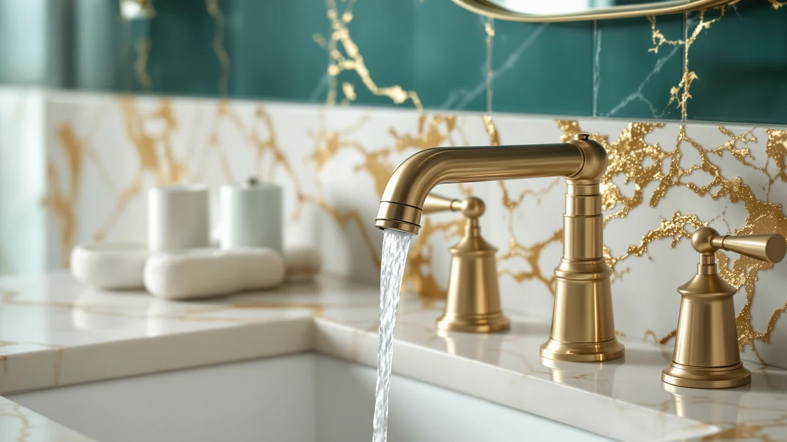

Best Bathroom Faucets for the Price of 2026: 7 Top Picks
Prices and picks verified as of August 2026. Independent, reader-supported reviews.


Quick Answer
If you want the best bathroom faucets for the price, the Sinbana 3pcs Hot and Cold Water set is our top pick at $5.49 because it covers brass-bodied hot and cold control without padding the cost. Spend more only when you want a coordinated widespread look, where the Pfister Courant at $51.66 earns its keep.
Our pick: 3pcs Hot and Cold Water — $5.49 Check Price on Amazon
Bottom line: our top pick is the 3pcs Hot and Cold Water Faucet Indicator Compatible with at $5.49. The best budget option is the 4Pcs Bathroom Faucet Aerator Replacement - 15"/16" 24mm at $7.45.
Things to Know Before You Buy
- Match the faucet to your sink holes first. A 4-inch centerset, an 8-inch widespread, and a single-hole faucet each fit a different sink layout, so count your holes before you buy.
- Brass beats plastic at every price. Every pick here uses a brass body with a finish, which lasts longer than the all-plastic units that sell for the same money.
- Price spans a wide range. Our list runs from a $5.49 hot-and-cold component to a $73.93 widespread Pfister, so set your budget against the look you want.
- Brand backing matters for parts. Pfister models cost more, but the name comes with established support and replacement parts down the road.
- Sometimes a $7 aerator fixes the problem. If your current faucet sprays or trickles, a new aerator can restore the flow before you spend on a full replacement.
Finding the best bathroom faucets for the price means weighing finish, build, and install effort against what you actually pay at checkout. We pulled together seven options that range from a $5.49 hot-and-cold set to a $73.93 widespread Pfister, then sorted them by who each one suits. Price alone will not tell you whether a faucet holds up, so we looked at brand track record and finish quality too.
You will see a wide spread here. The Sinbana 3pcs Hot and Cold Water set sits at the bottom on price, while the Pfister Venturi and Courant carry the cost of a matched widespread design. In between, the Evolvegoods brushed nickel single-handle unit and the Fransiton 4-inch centerset give you a finished faucet for under $30.
We kept the comparison honest about trade-offs. A $5 component will not feel like a $70 widespread faucet, and a budget single-handle unit asks more patience during install. The picks below tell you where your money goes and which faucet fits your sink and budget.
Why You Should Trust Us
I am Ilane Tall, and I cover bathroom hardware for this site. To rank the best bathroom faucets for the price, I compared each model on its listed material, finish, mounting style, and street price rather than chasing brand hype. I read through owner feedback for recurring complaints about drips, finish wear, and install headaches, then weighed those against what each faucet costs. When a cheaper option does the same job as a pricier one, I say so plainly.
I have no stake in which faucet you choose. The Amazon links here pay us a small commission, but that does not change the order of the list or which faucet I call the best value. I would rather send you to a $5 component that works than upsell a $74 faucet you do not need.
How We Picked
We started with faucets and faucet components that solve a clear bathroom need at a defensible price. That balance of price against build is the whole point of this list. We required a brass body or brass-plus-finish construction, a recognizable mounting standard such as centerset, widespread, or single-hole, and a price that matched the build. We set aside listings with thin specs or inflated prices for what amounts to a basic single-handle unit.
That filtering left seven picks spanning $5.49 to $73.93, from value components to full widespread sets. We made sure the group covered the common sink layouts so you can find a faucet that drops into your existing holes without extra drilling.
How We Compared
We evaluated these faucets on the things that matter once one sits on your sink: finish consistency, handle feel, mounting fit, and whether the price holds up against close rivals. We checked each faucet's hole spacing against common sink layouts, compared finishes within the same family, and noted where a low price comes with a real compromise.
We did not assign numeric scores or invent a lab. Instead, we matched each faucet to the buyer it serves best and flagged the honest drawback of every pick so you know the trade-off before you spend.
Our Picks

3pcs Hot and Cold Water
What we like
- Lowest price in this lineup at $5.49
- Brass construction instead of plastic at this tier
- Covers both hot and cold in one kit
Flaws but not dealbreakers
- A basic component, not a styled faucet
- No matched widespread or single-handle look
| Material | Brass + finish |
| Size | — |
The Sinbana 3pcs Hot and Cold Water set earns our top spot for one reason: it does the job for $5.49. At that price you get a brass-bodied set that handles hot and cold control, which is the part of a faucet most budget shoppers actually need to replace. You are not paying for a designer spout or a coordinated finish, and that keeps the cost where it belongs. The brass body also gives you more durability than the plastic parts you find on the cheapest listings.
This set suits a rental, a utility bath, or any sink where function beats looks. The three-piece layout keeps install straightforward, and the low price means you can replace a worn assembly without a second thought. If you want the best bathroom faucets for the price and a showroom appearance does not top your list, start here. Buyers who want a single matched faucet for a guest bath should look at the Fransiton or Evolvegoods picks below instead.

Pfister Courant 8-Inch Widespread Bathroom
What we like
- Widespread 8-inch layout for a built-in look
- Pfister brand with established support and parts
- Brass-plus-finish build
Flaws but not dealbreakers
- Costs nearly ten times the Sinbana set
- Three-hole install takes longer than a centerset
| Material | Brass + finish |
| Size | 8 Inch |
The Pfister Courant is our runner-up because it brings a finished, coordinated look to a three-hole sink for $51.66. The 8-inch widespread layout separates the handles and spout across the sink for the built-in appearance you usually pay more to get. Pfister stands behind it, which matters when you want replacement parts and support years from now.
You pay for that polish. At nearly ten times the price of our top pick, the Courant only makes sense when your sink has three holes and you want them to match. The widespread install asks for more time and care than a single-hole faucet, so plan the extra connections. For shoppers comparing the best bathroom faucets for the price who want a name-brand widespread without crossing $60, the Courant is the one to beat.

Pfister Venturi 8 in Widespread
What we like
- Pfister build quality and finish work
- 8-inch widespread for an upscale layout
- Brass body for long service life
Flaws but not dealbreakers
- Most expensive faucet here at $73.93
- Overkill for a secondary or rental bath
| Material | Brass + finish |
| Size | 8 Inches |
The Pfister Venturi sits at the top of our price range at $73.93, and it shows where extra money goes on a widespread faucet. You get Pfister's finish work and a refined 8-inch widespread layout that reads as upscale on a vanity. The brass body backs up the look with the durability you expect from a faucet meant to stay put for years.
This is the pick for a primary bathroom where the faucet counts as part of the design. It costs more than most shoppers chasing the best bathroom faucets for the price will want to spend, so we list it for the buyer who has the budget and a three-hole sink to fill. If $74 feels steep, the Courant gives you a similar widespread layout for about $22 less.

Brushed Nickel Bathroom Faucet 3
What we like
- Brushed nickel finish for under $30
- Single-handle operation is simple to use
- Brass-plus-finish construction
Flaws but not dealbreakers
- Lesser-known brand than Pfister
- One finish option limits matching to existing fixtures
| Material | Brass + finish |
| Size | — |
The Evolvegoods brushed nickel faucet is our budget pick because it gives you a complete, finished single-handle faucet for $29.99. Brushed nickel hides water spots and fingerprints better than chrome, so this one stays looking clean with less wiping. The single-handle design controls temperature and flow in one motion, which most people prefer for a quick wash.
Evolvegoods is not a household name like Pfister, so you trade brand recognition for the low price. That is a fair deal when you want a styled faucet without paying widespread money, and the brass-plus-finish build is a step up from all-plastic bargain units. For a single-hole sink that needs a real upgrade rather than a parts swap, this is where the value lands.

4Pcs Bathroom Faucet Aerator Replacement
What we like
- Four aerators for $7.45
- Fixes splashing and weak flow cheaply
- Works with standard faucet threads
Flaws but not dealbreakers
- An accessory, not a faucet
- Will not change how your faucet looks
| Material | Brass + finish |
| Size | — |
The SIMAX 4-pack aerator set proves that fixing a faucet does not always mean replacing it. For $7.45 you get four replacement aerators that screw onto standard faucet threads and restore a steady, splash-free stream. A clogged or worn aerator is the most common reason a faucet sprays or trickles, and swapping it takes a minute by hand.
This is an accessory, so it will not change how your faucet looks. We include it because the cheapest way to improve a faucet is often a new aerator, and a four-pack covers several sinks or future replacements. When your current faucet works but the flow has gone wrong, this fix belongs on any honest list of the best bathroom faucets for the price before you spend on a whole new unit.

Bathroom Sink Faucet FRANSITON 4
What we like
- 4-inch centerset fits common two-hole sinks
- Complete faucet for $23.38
- Brass-plus-finish build
Flaws but not dealbreakers
- Lesser-known brand
- Centerset layout looks less upscale than widespread
| Material | Brass + finish |
| Size | 4 Inch |
The Fransiton 4-inch centerset faucet covers the most common bathroom sink layout for $23.38. A 4-inch centerset fits the two-hole sinks found in most apartments and older homes, so this faucet drops in where a widespread will not. You get a complete unit, spout and handles together on one base, which simplifies install compared with a three-piece widespread.
Fransiton is a smaller brand, and the centerset layout looks more utilitarian than a spread-out Pfister. For the money, though, it makes a solid match for a standard sink that needs a working, finished faucet. Shoppers weighing options for a two-hole sink should put this next to the Evolvegoods pick and choose based on whether they want a centerset or a single-hole design.

Pfister Willa Bathroom Sink Faucet
What we like
- Pfister design and brand support
- Single-pack, complete faucet
- Brass-plus-finish build
Flaws but not dealbreakers
- Costs more than our budget picks
- Pricier than the Evolvegoods single-handle unit
| Material | Brass + finish |
| Size | 1 Pack |
The Pfister Willa rounds out our list as a styled, brand-backed faucet for $59.48. It carries Pfister's finish quality and current design language, so it looks at home in an updated bathroom. As a single-pack complete faucet, it installs as one coordinated unit rather than separate widespread pieces.
At just under $60, the Willa costs more than our budget and centerset picks, so it suits the buyer who wants Pfister styling without stepping up to the widespread Venturi. The brass-plus-finish build should outlast cheaper all-metal-look units. If you are sorting the best bathroom faucets for the price and brand matters to you, the Willa gives you the Pfister name in a single-faucet package for less than the widespread models.
Quick Comparison
| Product | Material | Price | Rating | Best for | Get it |
|---|---|---|---|---|---|
| 3pcs Hot and Cold Water | Brass + finish | $5.49 | 4 | Tight budgets and basic hot-and-cold replacement | View on Amazon → |
| Pfister Courant 8-Inch Widespread Bathroom | Brass + finish | $51.66 | 4 | Three-hole sinks wanting a widespread look | View on Amazon → |
| Pfister Venturi 8 in Widespread | Brass + finish | $73.93 | 4 | Primary baths wanting an upscale widespread | View on Amazon → |
| Brushed Nickel Bathroom Faucet 3 | Brass + finish | $29.99 | 4 | Single-hole sinks wanting a finished faucet | View on Amazon → |
| 4Pcs Bathroom Faucet Aerator Replacement | Brass + finish | $7.45 | 4 | Reviving flow on a faucet you already have | View on Amazon → |
| Bathroom Sink Faucet FRANSITON 4 | Brass + finish | $23.38 | 4 | Two-hole centerset sinks on a budget | View on Amazon → |
| Pfister Willa Bathroom Sink Faucet | Brass + finish | $59.48 | 4 | Updated baths wanting Pfister styling under $60 | View on Amazon → |
What is the best bathroom faucet for the price?
For most budgets, the Sinbana 3pcs Hot and Cold Water set is the best bathroom faucet for the price at $5.49 because it delivers brass-bodied hot and cold control without paying for styling you may not need.
How much should I spend on a bathroom faucet?
You can get a working faucet from about $23 to $30, like the Fransiton centerset or the Evolvegoods single-handle, and a coordinated widespread set from Pfister runs $51 to $74.
The Competition
We focused this guide on faucets and components that hold a clear price-to-build advantage, which meant leaving several options off the list. We passed on no-name single-handle faucets priced near the Evolvegoods pick but built with plastic bodies, since they fail sooner and cost about the same. We also skipped premium widespread sets above $100, which fall outside a value comparison like this one.
Touchless and pull-down bathroom faucets came up in our research, but their electronics and higher prices put them in a different category than the budget-to-midrange picks here. When your priority is the lowest defensible price for a working, good-looking faucet, the seven picks above cover the range better than those extras.
Frequently Asked Questions
What is the best bathroom faucet for the price?
For most budgets, the Sinbana 3pcs Hot and Cold Water set is the best bathroom faucet for the price at $5.49 because it delivers brass-bodied hot and cold control without paying for styling you may not need. If you want a complete styled faucet, the Evolvegoods brushed nickel single-handle unit at $29.99 is the better value.
How much should I spend on a bathroom faucet?
You can get a working faucet from about $23 to $30, like the Fransiton centerset or the Evolvegoods single-handle, and a coordinated widespread set from Pfister runs $51 to $74. Spend more only when you want a matched three-hole look or a specific brand finish.
Are cheap bathroom faucets worth it?
A cheap faucet is worth it when the body is brass rather than plastic and the brand has a track record, which is how we chose the best bathroom faucets for the price here. The Sinbana set leads our list, and Pfister's Courant and Willa show that you can stay under $60 and still get a trusted name.